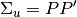

statsmodels.tsa.vector_ar.var_model.VARProcess¶
-
class
statsmodels.tsa.vector_ar.var_model.VARProcess(coefs, intercept, sigma_u, names=None)[source]¶ Class represents a known VAR(p) process
Parameters: coefs : ndarray (p x k x k)
intercept : ndarray (length k)
sigma_u : ndarray (k x k)
names : sequence (length k)
Returns: Attributes:
Methods
acf([nlags])Compute theoretical autocovariance function acorr([nlags])Compute theoretical autocorrelation function forecast(y, steps)Produce linear minimum MSE forecasts for desired number of steps forecast_cov(steps)Compute theoretical forecast error variance matrices forecast_interval(y, steps[, alpha])Construct forecast interval estimates assuming the y are Gaussian get_eq_index(name)Return integer position of requested equation name is_stable([verbose])Determine stability based on model coefficients long_run_effects()Compute long-run effect of unit impulse ma_rep([maxn])Compute MA() coefficient matrices mean()Mean of stable process mse(steps)Compute theoretical forecast error variance matrices orth_ma_rep([maxn, P])Compute Orthogonalized MA coefficient matrices using P matrix such that . plot_acorr([nlags, linewidth])Plot theoretical autocorrelation function plotsim([steps])Plot a simulation from the VAR(p) process for the desired number of Methods
acf([nlags])Compute theoretical autocovariance function acorr([nlags])Compute theoretical autocorrelation function forecast(y, steps)Produce linear minimum MSE forecasts for desired number of steps forecast_cov(steps)Compute theoretical forecast error variance matrices forecast_interval(y, steps[, alpha])Construct forecast interval estimates assuming the y are Gaussian get_eq_index(name)Return integer position of requested equation name is_stable([verbose])Determine stability based on model coefficients long_run_effects()Compute long-run effect of unit impulse ma_rep([maxn])Compute MA() coefficient matrices mean()Mean of stable process mse(steps)Compute theoretical forecast error variance matrices orth_ma_rep([maxn, P])Compute Orthogonalized MA coefficient matrices using P matrix such that . plot_acorr([nlags, linewidth])Plot theoretical autocorrelation function plotsim([steps])Plot a simulation from the VAR(p) process for the desired number of